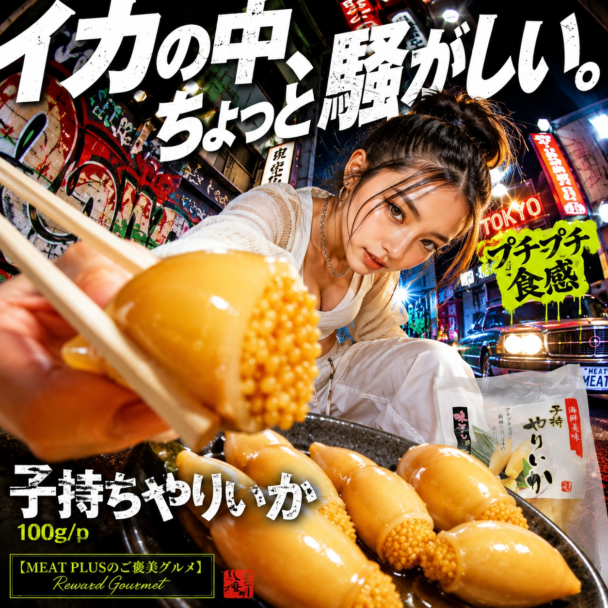
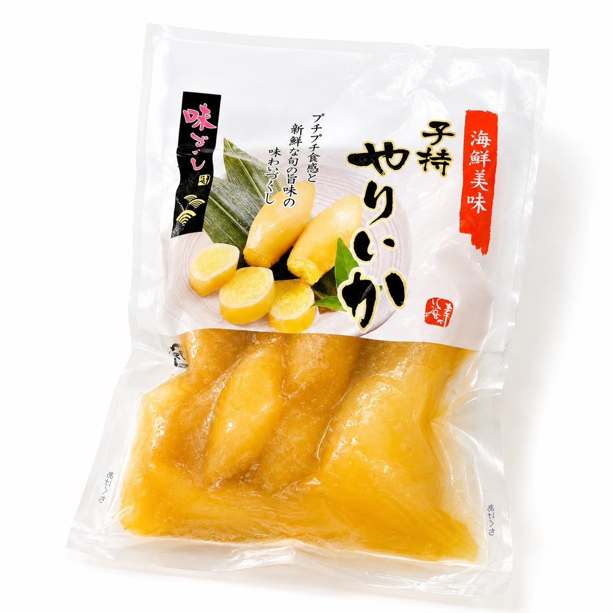
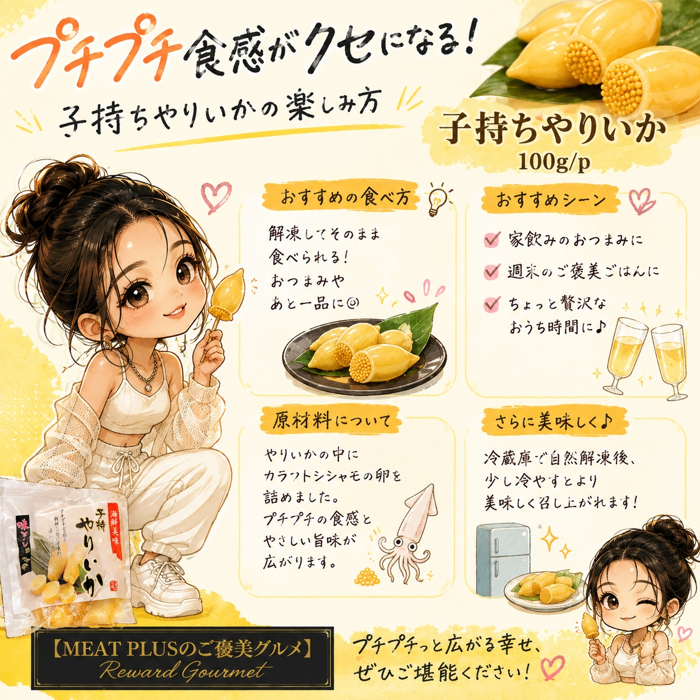

SCENE 01

j 海鮮・魚介類
プチプチ食感
【商品名案】 1. プチプチ食感がたまらない！魚卵ぎっしり 子持ちやりいか 100gパック 甘辛醤油味 冷凍惣菜 おつまみやご飯のお供に 2. 食卓にもう一品 卵がぎっしり詰まった珍味 子持ちやりいか 100gパック プチプチ食感と甘じょっぱい味付けが癖になる 冷凍ストックでいつでも簡単 3. 居酒屋の味をご家庭で とろける旨味とプチプチ弾ける食感の子持ちやりいか 100gパック 冷凍惣菜 晩酌のお供やおかずに最適 【キャッチコピー】 噛むほどに広がる魚卵の旨味。プチプチ食感が楽しい子持ちやりいか。 【商品説明文】 いつもの食卓に、ちょっとした彩りとごちそう感を添える一品はいかがでしょうか。やわらかなやりいかの中に、プチプチと弾けるカラフトシシャモの卵をぎっしりと詰め込みました。口に入れると、まずはいかの優しい甘み、そして噛むほどに魚卵の濃厚な旨味がじゅわっと広がります。どこか懐かしさを感じる甘じょっぱい醤油ベースの味付けは、お子様から大人まで、どなたにも喜ばれる味わい。熱々のご飯にのせれば、何杯でもおかわりしたくなる美味しさです。もちろん、日本酒やビールのお供としても相性抜群。冷凍庫にストックしておけば、解凍するだけで手軽に本格的な一品が完成します。今夜の晩酌や、食卓の「あと一品」に、この美味しさをぜひ加えてみてください。豊かな食卓のひとときが、あなたを待っています。 【おススメポイント】 ・【やみつきになる食感】やわらかなやりいかの中に、プチプチと弾けるカラフトシシャモの卵をたっぷり詰め込みました。噛むたびに口の中に広がる旨味と食感をお楽しみください。 ・【ご飯にもお酒にも合う味付け】お子様から大人まで楽しめる、どこか懐かしい甘じょっぱい醤油味です。熱々のご飯にのせても、晩酌のお供にしても相性抜群です。 ・【冷凍で簡単ストック】食べたい時にすぐ食卓へ。冷凍庫に常備しておけば、急な来客や「あと一品欲しい」という時に大活躍。解凍するだけで本格的な味わいが楽しめます。 ・【便利な使い切りサイズ】1パック100gと、一度で使い切りやすい量にこだわりました。一人で少し楽しみたい時にも、ご家族の食卓に彩りを添えたい時にもぴったりです。 【FAQ】 1. おすすめの解凍方法を教えてください。 風味を損なわず美味しくお召し上がりいただくために、冷蔵庫でゆっくり自然解凍するのがおすすめです。お急ぎの場合は、パックのまま流水に当てて解凍することも可能です。 2. どのように食べるのがおすすめですか？ 解凍後、そのままお召し上がりいただけます。温かいご飯にのせるのはもちろん、お酒の肴として、また刻んで和え物に加えたり、お弁当のおかずにしたりと、幅広くお使いいただけます。 【商品情報】 商品名: プチプチ弾ける！子持ちやりいか 商品規格: 100ｇ/ｐ 原材料: いか魚卵詰め（やりいか、カラフトシシャモ卵、魚肉すり身、食塩）、しょうゆ、砂糖混合異性化液糖、、還元水飴、醸造調味料/調味料（アミノ酸等）、酸味料、カロチノイド色素、リン酸塩（Na)、（一部に小麦・いか・大豆・ゼラチンを含む） 原産国: マレーシア 製造地: 日本 賞味期限: 発送日より3ヶ月
公式サイトへ移動します。価格・在庫・配送条件は移動先で最終確認してください。


PRODUCT INFORMATION
いか魚卵詰め（やりいか、カラフトシシャモ卵、魚肉すり身、食塩）、しょうゆ、砂糖混合異性化液糖、、還元水飴、醸造調味料/調味料（アミノ酸等）、酸味料、カロチノイド色素、リン酸塩（Na)、（一部に小麦・いか・大豆・ゼラチンを含む）
MEAT PLUS OFFICIAL SHOP
仕入れ・加工・梱包・発送まで自社で行うMEAT PLUSの公式オンラインショップでご注文いただけます。
公式オンラインショップで購入する